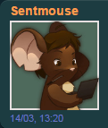
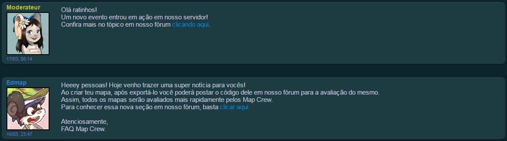

<!DOCTYPE html>
<title>Fastmice! » News</title>
<link rel="shortcut icon" href="./images/favicon.ico">
<script type="text/javascript" async="" src="./archives/ga.js.download"></script>      <link rel="stylesheet" type="text/css" href="./archives/1.25.18.css"> <script src="./archives/1.25.18.js.download"></script><style id="css-ddslick" type="text/css">.dd-select{ border-radius:2px; border:solid 1px #ccc; position:relative; cursor:pointer;}.dd-desc { color:#aaa; display:block; overflow: hidden; font-weight:normal; line-height: 1.4em; }.dd-selected{ overflow:hidden; display:block; padding:5px; font-weight:bold;}.dd-pointer{ width:0; height:0; position:absolute; right:10px; top:50%; margin-top:-3px;}.dd-pointer-down{ border:solid 5px transparent; border-top:solid 5px #000; }.dd-pointer-up{border:solid 5px transparent !important; border-bottom:solid 5px #000 !important; margin-top:-8px;}.dd-options{ border:solid 1px #ccc; border-top:none; list-style:none; box-shadow:0px 1px 5px #ddd; display:none; position:absolute; z-index:2000; margin:0; padding:0;background:#fff; overflow:auto;}.dd-option{ padding:5px; display:block; border-bottom:solid 1px #ddd; overflow:hidden; text-decoration:none; color:#333; cursor:pointer;-webkit-transition: all 0.25s ease-in-out; -moz-transition: all 0.25s ease-in-out;-o-transition: all 0.25s ease-in-out;-ms-transition: all 0.25s ease-in-out; }.dd-options > li:last-child > .dd-option{ border-bottom:none;}.dd-option:hover{ background:#f3f3f3; color:#000;}.dd-selected-description-truncated { text-overflow: ellipsis; white-space:nowrap; }.dd-option-selected { background:#f6f6f6; }.dd-option-image, .dd-selected-image { vertical-align:middle; float:left; margin-right:5px; max-width:64px;}.dd-image-right { float:right; margin-right:15px; margin-left:5px;}.dd-container{ position:relative;}​ .dd-selected-text { font-weight:bold}​</style>        </head> <div id="contenant-corps-et-footer"> <div id="popup"></div>         <div class="modal hide fade ltr" id="popup_choix_langue"> <div class="modal-header">   </div> <div class="modal-footer"> <a class="btn" data-dismiss="modal">Fechar</a> </div> </div> <!--[if lt IE 7]><p class="chromeframe">You are using an outdated browser. <a href="http://browsehappy.com/">Upgrade your browser today</a> or <a href="http://www.google.com/chromeframe/?redirect=true">install Google Chrome Frame</a> to better experience this site.</p><![endif]-->  <div id="barre_navigation" class="navbar navbar-fixed-top navbar-inverse"> <div class="navbar-inner"> <div class="container-fluid menu-principal ltr"> <a class="btn btn-navbar" data-toggle="collapse" data-target=".nav-collapse">    </a><!--BARRA DE CIMA --><center> <div class="nav-collapse collapse"> <ul class="nav  ltr">  <li class=""></li> <li class="dropdown "><li class=""></li>  <li class="active"></li>      </ul> <ul class="nav pull-right ltr">      <li class="dropdown"></li> </li> </ul> </div> </div>      <div class="container-fluid menu-secondaire">  <div class="row-fluid"> <div class="span12">         </a>  </li></a>  </li>        <div class="btn-group">    <a class="btn btn-inverse ltr " href="index.html"><span class="hidden-phone hidden-tablet">Return to home page</span></a> </div> </div> </div>  </div>  </div> </div> <div id="espace_barre_navigation" class="hidden-phone hidden-tablet" style="height: 82px;"></div></center><script type="text/javascript">
		majTailleEspaceNavbar();
	</script>
	<br><br>
<div id="corps" class="corps clear container">    <div class="row"> <div class="span12">         <div class="cadre cadre-relief cadre-sujet ltr "> <table class="table-cadre table-cadre-centree"> <tbody><tr> <td>  <span class="cadre-sujet-titre"> <center>Welcome to the Fastmice news page! <b>Read the sticky post to better</b> understand the posting scale.</center></span> </td> </tr> </tbody></table>  </div> </div> </div>
<center>

	<br><br>
				<div id="corps" class="corps clear container">   <div class="row"> <div class="span12">               <div class="cadre cadre-relief cadre-utilisateur ltr "> <table class="table-cadre"> <tbody><tr> <td> <div class="cadre-auteur-message element-composant-auteur ">  <div class="btn-group bouton-nom max-width">   
						
						<!-- author --><span class="element-bouton-profil bouton-profil-nom  cadre-type-auteur-admin nom-utilisateur-scindable"> Amr</span><div class="avatar-profil"> <br> </div> </td> 
										<!-- title --><td class="table-cadre-cellule-principale"> <div class="cadre-utilisateur-principal"> <div class="btn-group bouton-nom-profil">  <p style="color: #009D9D"><span class="font-xxl cadre-type-auteur-joueur{color:#6C77C1;text-shadow:none}"> Welcome to the posts section!</span></p> </a>  <table> <tr>      </td>                </tr> </tbody></table>  </div>  
														<!-- subtitle or fix post --><span><span style="color: #525a91"><i>Pinned by <b>Amr</b> on <b>23/02/2025</b></i>	</span></span>  
				<br><tr>
			 <!-- start #1 --><div class="row"> <div class="span12" id="cadre_message_sujet_24793871">                         <table class="table-cadre"> <tbody><tr> <td class="table-cellule-gauche_haut" rowspan="2" colspan="1">               <div class="cadre-auteur-message element-composant-auteur ">  <div class="btn-group bouton-nom max-width"> <a class="dropdown-toggle highlightit" data-toggle="dropdown" href="http://atelier801.com/topic?f=5&amp;t=862102#">   <span class="element-bouton-profil bouton-profil-nom  cadre-type-auteur-joueur nom-utilisateur-scindable">  <ul class="dropdown-menu menu-contextuel pull-left"> <table> <tbody><tr>     <td class="cellule-menu-contextuel"> <ul class="liste-menu-contextuel"> <li class="nav-header">  Taazes</li> <li><a class="element-menu-contextuel" href="http://atelier801.com/profile?pr=Taazes">Perfil</a></li> <li><a class="element-menu-contextuel" href="http://atelier801.com/posts?pr=Taazes">Últimos posts</a></li>   <li><a href="http://atelier801.com/tribe?tr=993710" class="element-menu-principal">Tribo</a></li>  </ul> </td>               </tr> </tbody></table> </ul> </div>   </div> </td> <td class="table-cadre-cellule-vide"></td>  </tr> 
			 
			 <!-- message fix post --><tr> <td class="table-cadre-cellule-principale table-cellule-droite_bas" rowspan="2" colspan="1"> <div class="cadre-message-contenu"> <div class="cadre-message-message">    <div id="message_24793871">Hello!<br>Welcome to the staff posts section! Below is a scale to make it easier to read on this page.<br><div class="spoiler">	<input type="button" onclick="showSpoiler(this);" value="Spoiler" id="bouton_spoil_230428" class="btn btn-small btn-message" /><div class="inner" style="display:none;"><h3>@Identification of position by nickname (surname)</h2><br>Each position on the staff has its own color for better identification, follow them below:<br><li><span style="color:#EB1D51;">Administrador</span><li><span style="color:#BABD2F;">Coordenador, Super Moderador, Moderador</span><li><span style="color:#2ECF73;">Helper</span><li><span style="color:#2E7ECB;">MapCrew</span><li><span style="color:#fe9d4d;">Sentinel</span><br>These colors are used in nicknames in the post as in the example below:<br></img><br>Therefore, you will be able to see a staff post and identify them by their color. The staff may be announcing some type of event, posting about updates, among others. It all comes from the need to create a new post of your own.<br><h3>@Order of posts</h3><br>The posts are from newest to oldest. If there are two posts, one from the previous day and the other from the current day, the previous day's post will be below the current day's post as shown in the image below:<br></img><br>If you have any questions, send a private message to a staff member on the forum or right here in the game.</div> </div>   </div>  </div> </td> </tr> </tbody></table>         </div> </div> </div>  
			 
			 
			 <!-- start #3 --><div class="row"> <div class="span12" id="cadre_message_sujet_24793914">                        <div id="m2" class="cadre cadre-relief cadre-message ltr "> <table class="table-cadre"> <tbody><tr> <td class="table-cellule-gauche_haut" rowspan="2" colspan="1">               <div class="cadre-auteur-message element-composant-auteur ">  <div class="btn-group bouton-nom max-width">    <span class="element-bouton-profil bouton-profil-nom  cadre-type-auteur-#fe9d4d nom-utilisateur-scindable"><span style="color:#EB1D51;">  Amr</span></span>         <div class="element-composant-auteur cadre-auteur-message-date"><span class="">23/02, 15:52</span></div>  </a> <ul class="dropdown-menu menu-contextuel pull-left"> <table> <tbody><tr>     <td class="cellule-menu-contextuel"> <ul class="liste-menu-contextuel">  </ul> </td>               </tr> </tbody></table> </ul> </div>   </div> </td> <td class="table-cadre-cellule-vide"></td>  </tr> <tr> <td class="table-cadre-cellule-principale table-cellule-droite_bas" rowspan="2" colspan="1"> <div class="cadre-message-contenu"> <div class="cadre-message-message">    
			 <div id="message_23654130"><ul class="nav nav-tabs" id="tabs_message_1"><li id="li_tab_1_message_1" class="active"><a href="#tab_1_message_1" id="lien_tab_1_message_1" data-toggle="tab">	Introduction</a></li><li id="li_tab_2_message_1"><a href="#tab_2_message_1" id="lien_tab_2_message_1" data-toggle="tab">How to join Discord</a></li><li id="li_tab_3_message_1"><a href="#tab_3_message_1" id="lien_tab_3_message_1" data-toggle="tab">Interface and Channels</a></li></ul><div class="tab-content"><div id="tab_1_message_1" class="tab-pane active"><div class="ltr"><p style="text-align:center;"></p><br /><br /><span style="font-weight:bold;"><span style="color:#6C77C1;"><span style="font-size:16px;">What is Discord?</span></span></span><br /><br />Discord is a VoIP-type platform (similar to Skype, Teamspeak, etc.) that is free to use and is designed for gaming communities. In addition, it is very light and does not require downloading and can therefore be used even in internet browsers. It is also available for cell phones.<br />Discord is compatible with the following systems: Windows, Mac OS X, Android, iOS, Linux.<br /><br />For Atelier801, it is an effective means of rapid communication between the Staff and players. If you need this type of contact with an Administrator, Moderator, Sentinel or Mapcrew, you are in the right place, whether for questions or problem solving. Keep in mind that patience and understanding are necessary for good contact.<br /><br /><hr /><p style="text-align:center;">If you already know Discord and want to join the Official Fastmice Channel, click here:</p><br /><br /><a href="https://discord.gg/sfR8bWK6sc" target="_blank" rel="noopener" onclick="return verifierLienMemePageMessage(event);"><p style="text-align:center;"><span style="font-weight:bold;"><span style="font-size:20px;">Official Fastmice Channel.</span></span></p></a><br /><br /></div></div><div id="tab_2_message_1" class="tab-pane"><div class="ltr"><br /><br /><br />Para acessar o Discord é obrigatório o uso de uma conta. Você pode faze-la a partir desse <span style="font-weight:bold;"><a href="https://discordapp.com/register" target="_blank" rel="noopener" onclick="return verifierLienMemePageMessage(event);">link</a></span>. Se você já tem uma conta, pule essa aba e entre na sua conta a partir desse <span style="font-weight:bold;"><a href="https://discordapp.com/login" target="_blank" rel="noopener" onclick="return verifierLienMemePageMessage(event);">link</a></span>.<br /><br />Sua conta deverá ter as seguintes informações: Seu e-mail, usuário e senha.<br /><br /><p style="text-align:center;"></p><br /><br /> <span style="font-size:11px;"><span style="font-weight:bold;">ATENÇÃO: Não revele seus dados pessoais, e-mail ou senha da sua conta. Por razões de segurança.</span></span><br /><hr /><br /><br />Para obter mais segurança no seu Login do Discord é interessante você utilizar o Login de duas chaves, o que significa que quando você logar em novos computadores ele irá pedir uma autenticação pelo seu e-mail. Por razões de segurança é uma boa alternativa, porém não é obrigatório o uso do Login de duas chaves.<br /><br /><hr /><br /><br />Agora que você criou sua conta, ela possui dois tipos de identificação. Você agora tem o <span style="font-weight:bold;">seu nome de usuário e o número da sua conta</span>, essas duas informações são essenciais para mandar convites para amigos ou adicionar amigos. Você pode visualizar essas duas informações depois que sua conta foi criada no canto inferior direito.<br /><br /><p style="text-align:center;"></p><br /><br />Para passar seus dados para ser adicionado, é necessário sempre essas duas informações juntas: <br /><br /><blockquote class="cadre cadre-quote"><small> said:</small><div>Teste#5837</div></blockquote><br />Se elas não forem usadas como citado, <span style="font-weight:bold;">não irá funcionar adicionar amigos</span> de outro jeito.<br /><br /></div></div><div id="tab_3_message_1" class="tab-pane"><div class="ltr"><br /><p style="text-align:center;"></p>Assim que logar em sua conta, você verá essa tela:<br /><br /><p style="text-align:center;"></p><span style="color:#6C77C1;"><span style="font-weight:bold;">1.</span></span> Sua lista de amigos. Aqui terão suas mensagens diretas/privadas, sua lista de amigos, opção de adicionar remover ou bloquear usuários.<br /><br /><span style="color:#6C77C1;"><span style="font-weight:bold;">2.</span></span> O servidor do Transformice, e poderá ter mais servidores se você for convidado na sua conta. Para mais detalhes sobre o servidor do transformice, avance para o item 2.<br /><br /><span style="color:#6C77C1;"><span style="font-weight:bold;">3.</span></span> Suas mensagens diretas. Aí ficarão as suas conversas com seus amigos.<br /><br /><span style="color:#6C77C1;"><span style="font-weight:bold;">4.</span></span> Você pode criar servidores também. Nessa opção, você os cria.<br /><br /><span style="color:#6C77C1;"><span style="font-weight:bold;">5.</span></span> As opções de amigos, bloquear usuários e pedidos de amizade.<br /><br /><span style="color:#6C77C1;"><span style="font-weight:bold;">6.</span></span> Menções. Sempre que você for citado em algum servidor ou conversa, aparecerá ali.<br /><br /><span style="color:#6C77C1;"><span style="font-weight:bold;">7.</span></span> Sua conta e informações dela.<br /><br /><span style="color:#6C77C1;"><span style="font-weight:bold;">8.</span></span> No Discord é possível realizar conversas de voz também, essa opção muta seu microfone.<br /><br /><span style="color:#6C77C1;"><span style="font-weight:bold;">9.</span></span> Essa opção muta as conversas por voz.<br /><br /><span style="color:#6C77C1;"><span style="font-weight:bold;">10.</span></span> Opções da sua conta e interface.<br /><br /><span style="color:#6C77C1;"><span style="font-weight:bold;">Obs sobre comandos:</span></span> Todos os comandos estão disponíveis se você digitar na barra de mensagem:<br /><br /><blockquote class="cadre cadre-quote"><small> said:</small><div>\</div></blockquote><br />Você conseguirá visualizar todos os comandos disponíveis.<br /><hr /><p style="text-align:center;"><a href="https://discord.gg/nhhdPYB" target="_blank" rel="noopener" onclick="return verifierLienMemePageMessage(event);"><br /><br /><span style="font-weight:bold;"><span style="font-size:20px;">Para entrar no Canal, clique aqui.</span></span></p></a><br />Assim que você entrar no canal e seleciona-lo na lista, verá a seguinte tela:<br /><br /><p style="text-align:center;"></p><span style="color:#6C77C1;"><span style="font-weight:bold;">1.</span></span> É o chat para todas as nacionalidades. É interessante falar inglês aqui.<br /><br /><span style="color:#6C77C1;"><span style="font-weight:bold;">2.</span></span> Aqui você poderá ver o chat para todas as línguas. Por favor, se dirija para a comunidade BR para que nós possamos te atender com mais exatidão. <span style="font-weight:bold;">NÃO</span> poste nas outras comunidades fora da língua nativa deles, respeite as outras comunidades!<br /><br /><span style="color:#6C77C1;"><span style="font-weight:bold;">3.</span></span> Aqui você escreve!<br /><br /><span style="color:#6C77C1;"><span style="font-weight:bold;">4.</span></span> Nessa lista estará mostrando quem está participando do Canal. Você poderá ver Administradores, Moderadores, Sentinelas, Mapcrews e usuários normais que participam do canal que estejam online ou offline. Então se você precisar de uma atenção de certo staff já poderá entrar em contato com ele diretamente.<br /><hr /><p style="text-align:center;"></p><span style="font-weight:bold;"><span style="color:#6C77C1;">◘</span></span> É interessante que você nos informe qual seu Nick no jogo e o que exatamente está acontecendo para você nos contatar. Assim poderemos te ajudar com mais eficiência.<br /><br /><span style="font-weight:bold;"><span style="color:#6C77C1;">◘</span></span> Não falte com respeito com jogadores ou com a Staff. Seja educado e seu problema ou dúvida será solucionado sem problemas.<br /><br /><span style="font-weight:bold;"><span style="color:#6C77C1;">◘</span></span> Não poste coisas que possam ofender os usuários do Canal. O Transformice é uma comunidade com várias nacionalidades e culturas, respeite-as.<br /><br /><span style="font-weight:bold;"><span style="color:#6C77C1;">◘</span></span> Não poste qualquer tipo de de material que seja +18. O Transformice é um jogo para todas as idades, sendo assim mantenha o bom senso.<br /><br /></div></div></div><script type="text/javascript">jQuery('#tabs_message_1 a').click(function (event) {(event.preventDefault) ? event.preventDefault() : event.returnValue = false;jQuery(this).tab('show');});</script></div>   </div>  <br><span class="cadre-message-dates">Last edit on <span class="date-ms-complete hidden" data-afficher-secondes="false">1487684340000</span></span>  </div> </td> </tr> </table>         </div> </div> </div>
			 
			 <!-- start #2 --><div class="row"> <div class="span12" id="cadre_message_sujet_24793914">                        <div id="m2" class="cadre cadre-relief cadre-message ltr "> <table class="table-cadre"> <tbody><tr> <td class="table-cellule-gauche_haut" rowspan="2" colspan="1">               <div class="cadre-auteur-message element-composant-auteur ">  <div class="btn-group bouton-nom max-width">    <span class="element-bouton-profil bouton-profil-nom  cadre-type-auteur-#fe9d4d nom-utilisateur-scindable"><span style="color:#EB1D51;">  Amr</span></span>         <div class="element-composant-auteur cadre-auteur-message-date"><span class="">23/02, 08:14</span></div>  </a> <ul class="dropdown-menu menu-contextuel pull-left"> <table> <tbody><tr>     <td class="cellule-menu-contextuel"> <ul class="liste-menu-contextuel">  </ul> </td>               </tr> </tbody></table> </ul> </div>   </div> </td> <td class="table-cadre-cellule-vide"></td>  </tr> <tr> <td class="table-cadre-cellule-principale table-cellule-droite_bas" rowspan="2" colspan="1"> <div class="cadre-message-contenu"> <div class="cadre-message-message">    
			 <div id="message_3"><p><b><p style="color: #ED67EA">Hack (last warning before account deletion)</b></span><p>• 5 hours<p>• He used some type of program to bring him his own benefit within the game. Program that infringes copyright on the use of the game. Program that infringes copyright on the use of the game.<p>• The following can be banned for this reason: Helper, Moderator, Super Moderator, Coordinator and Administrator. <p>• It is not necessary to obtain authorization from superiors to carry out the ban.<hr><b><p style="color: #ED67EA">Spambot (disclosure of pirated servers)</b></span><p>• 24 hours<p>• Committed 1st degree disclosure (messages that characterize and qualify a pirated game; method used to attract players to another game). <p>• The following can be banned for this reason: Helper, Moderator, Super Moderator, Coordinator and Administrator. <p>• It is not necessary to obtain authorization from superiors to carry out the ban.<hr><b><p style="color: #ED67EA">This account has been banned. Karma +1 (12)</b></span><p>• 1001 hours<p>• Used a Proxy method to change your own IP, thus causing ban/mute evasion. <p>• The following can be banned for this reason: Moderator, Super Moderator, Coordinator and Administrator. <p>• It is not necessary to obtain authorization from superiors to carry out the ban.<hr><b><p style="color: #ED67EA">Open VPN Proxy</b></span><p>• 360 hours<p>• He used a proxy to camouflage his own IP and connect to others in order to benefit in-game, creating a second reason for the ban: farm.<p>• The following can be banned for this reason: Helper, Moderator, Super Moderator, Coordinator and Administrator. <p>• It is not necessary to obtain authorization from superiors to carry out the ban.<p><p>You can use some contact methods to request your account to be unbanned. You can find out how to contact us by accessing <a href="https://discord.gg/sfR8bWK6sc" target="_blank" rel="noopener" onclick="return verifierLienMemePageMessage(event);">Mouse call center</a> to find out how to contact you, among others.<p>Remember: Accounts are only unbanned after the administrator responsible for your community has collected your request and sent it to the ban author (the staff who banned you). However, you will only be unbanned with the authorization of the staff who banned you. No other staff (not even your community administrators) can give unban orders if they weren't the ones who banned you. If the ban is intentional, the person will be unbanned and the staff will be demoted/fired.<p><p>If other people have or had access to your account, and it is banned, it is very likely that someone has entered it to cheat in the game. As the account is your responsibility, there is no way to receive an unban. If you have any doubts regarding access to your account, ask your community administrator for help and he or she will be able to help you. It will tell you what access your account has and you will actually know whether or not anyone else is using your account. However, you have the right to change your password after proving that you are responsible for it.</div>  </div> </td> </tr> </tbody></table>         </div> </div> </div></br></tr>

			

	<script type="text/javascript">
function showSpoiler(obj)
	{
	var inner = obj.parentNode.getElementsByTagName("div")[0];
	if (inner.style.display == "none")
		inner.style.display = "";
	else
		inner.style.display = "none";
	}
	</script>
	
	<script type="text/javascript">
					function init() {
						jQuery('.datepicker').datepicker({
							format:'dd/mm/yyyy'
						});

						if (window.location.hash && window.location.hash.length > 1) {
							jQuery('#lien_' + window.location.hash.substring(1)).tab('show');
						}

						var rfc = parseBoolean('false');

						if (rfc) {
							initRFC();
						}
					}
				</script>     </div> <script type="text/javascript">
	jQuery(document).ready(function() {
		bindAjax();
	});
</script> 
</html>